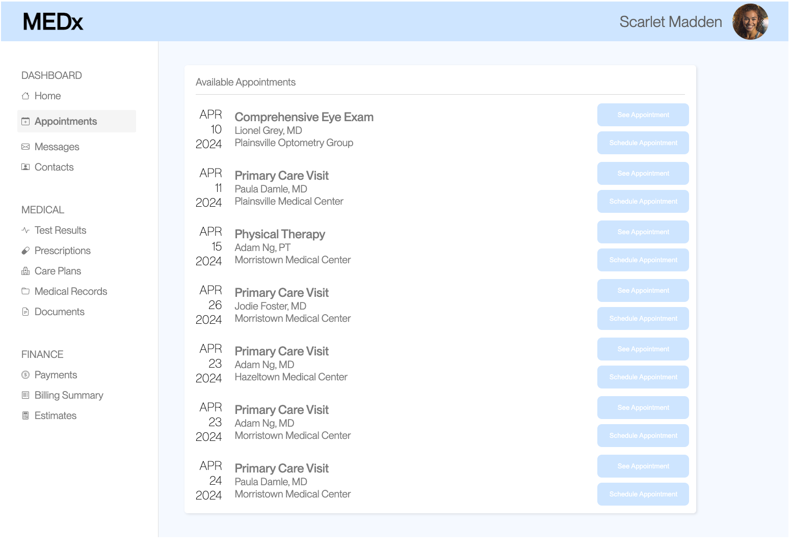
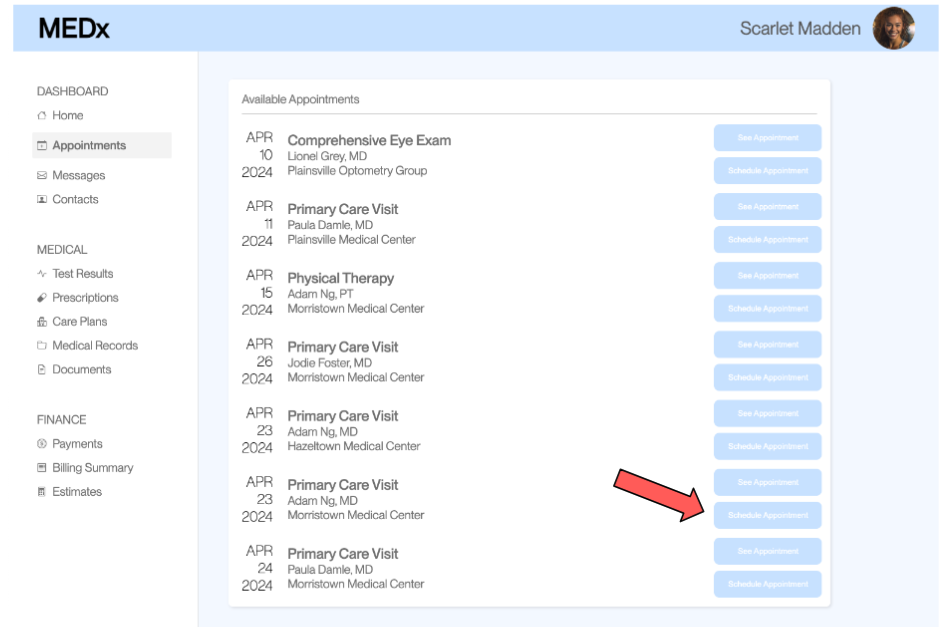
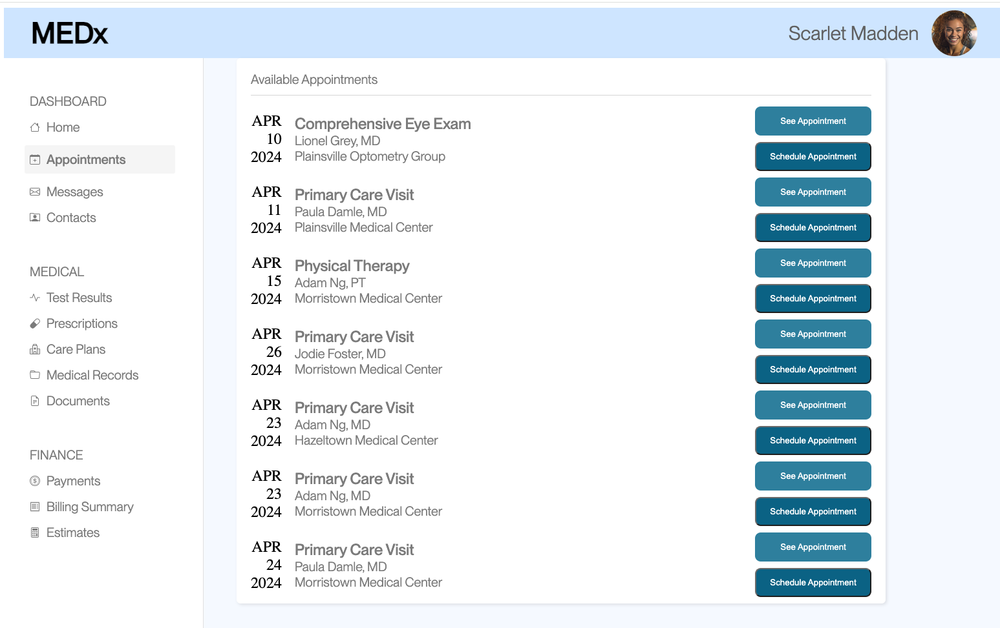
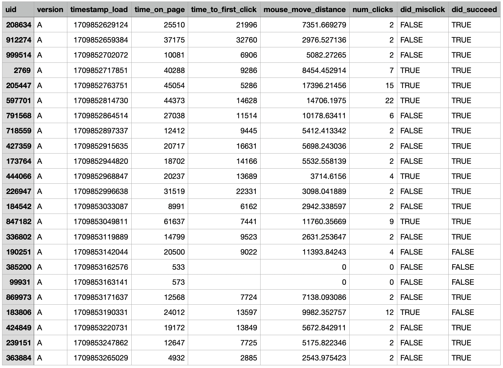
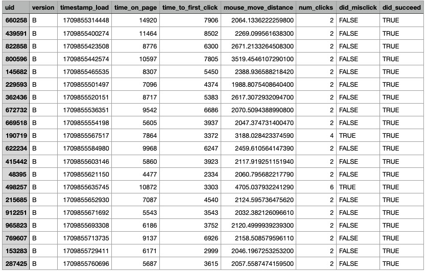
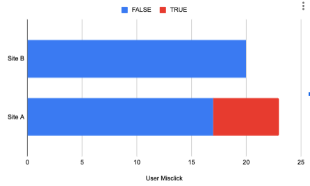
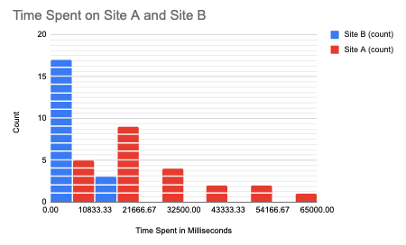
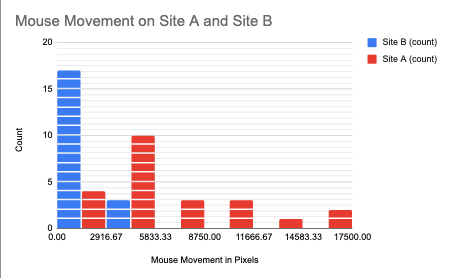

A Case Study into A/B Testing
It is easy to know when a website is bad. However, it is very hard to know what specifically makes it bad. It is even harder to know which of two websites is better.
However, this becomes a lot easier with a/b testing.This journal entry will start with a case study overview, then move to website analysis, proceed to a statistical summary, and analyze real user data.
Getting Started
I wanted to see how easy it is to A/B test. This term has always felt a little abstract and elusive, so I wanted to know what exact conclusions you can draw from it and when you should be using it.
First, I needed a website. Luckily, this was all part of a class project, so I was given one to start with. This serves as our A-site. It is a website meant to help you book doctor appointments.
Here is an image of the website I was given, which we will just call "A".
I was also given an objective to measure for A.
The Objective
Users were supposed to register for an appointment with Adam Ng at Morristown Medical Center on April 23, 2024.
This meant that they had to click on this specific button to succeed. Clicking another button resulted in a failure, and clicking on some other page element was called a misclick.
In all, 23 users accessed the page; they were tasked to achieve the objective. During this time, their mouse movement, time on page, and clicks were recorded.
Starting to Redesign
Now, I had a website, an objective, and some user data. All I needed was something to compare this to. I sought to create a different version of A. However, before doing this, I analyzed the core faults with A.
The Problems with A
1. Too little contrast between the button's text and background color.
2. The "See Appointment" and "Schedule Appointment" buttons are identical.
3. The dates are not in chronological order.
4. The locations are not clearly separated or filterable.
5. The doctors are not clearly separated or filterable.
These visual design choices result in site A having poor visibility and accessibility.
Creating B
A/B testing works best when you test one or a few specific elements at a time. This allows you to see what exact change made the difference, rather than just knowing something changed.
Thus, I knew I only wanted to make one or two changes to my alternative version of A, which we will just call "B".
I decided that the hard-to-read text was the most significant limitation on an individual's success rate, so I made changes to emphasize this when making my edits.
Specifically, I tried to focus on making the schedule and see appointments buttons both readable and slightly more distinct (using a drop shadow and different background for the schedule appointment button). I also went ahead and increased the font thickness for the dates, so that people could more easily see the date of each appointment.
The overall theme for my B was to improve readability.
The Data
In all, 20 people interacted with site B. They all attempted the same objective as the users from site A. Now, I want to see which website is better.
On the left is the data for site A, and the new data from site B is on the right.
 There is a lot here, so I'll break it down further.
There are three main data categories that I will be investigating to statistically determine the better website:
1. Did the user misclick? (known as "did_misclick")
2. How much did the user move their mouse? (known as "mouse_move_distance")
3. How long was the user on the page before completing the objective? (known as "time_on_page")
Since we are comparing two websites, we don't really need to focus too much on the units for these data points, rather just that they are consistent from website A to B. This has one notable exception of "did_misclick" which is a binary option. We will put a pin in this idea, and explain it later.
My main goal is to determine which of these three statistics are significantly different between site B and A. Whenever possible, I want to determine which of B's statistics are significantly less than A's statistics.I will be using a statistical threshold of p=0.05. This means that all p-values less than 0.05 will be considered significant.
Analysis Of Misclick Data:
This is a binary data point. Results are either TRUE or FALSE. This represents whether or not the user clicked on something before clicking the appointment button.
For this statistical analysis, we want to prove that there is a significant difference between site A and B.
This means that our Null Hypothesis (H0) is that there is no significant difference between the misclick rate for Site A and Site B.
Our Alternative Hypothesis (HA) is that the edits made to Site B's buttons and styling caused a scientifically significant difference in the misclick rate for Site A and Site B.
My prediction is that we will prove our HA because many stylistic and visual edits were made.
I need to use a chi-square test to analyze the statistical difference between site A and B because misclick data is a binary flag.
Misclick - Chi-square - Data Summary
The Degrees of Freedom for this test are one. This is based on the number of rows and columns of the data table. With a one and a significant threshold of p < 0.05, we can look at the chi-square distribution table to get a significance level of 3.841. All this means is that if our Chi^2 value is greater than 3.841, then we can reject our null hypothesis. The Chi^2 value was calculated to be 6.0634. Thus, we can reject the null hypothesis. The edits made to site B caused a significant change in user misclick data.
Analysis Of Time Data:
This is a continuous data point. Results are in milliseconds. This represents how long the user was on the website before completing the objective.
For this statistical analysis, we want to prove that users spent less time on site B than on site A. This would mean the new design was more efficient and clear. This was not possible for a binary data point; however, we can do it for continuous data types through a two-sample, one-tail t-test. Essentially, we are comparing two different sets of continuous variables and want to see if one group is significantly less than the other.
This means that our Null Hypothesis (H0) is that there is no significant difference between the time spent on Site A and Site B.
Our Alternative Hypothesis (HA) is that our edits made it so that users on site B needed significantly less time to complete the objective than users on Site A.
My prediction is that we will prove our HA because many stylistic and visual edits were made, improving the text legibility of site B.
Time Spent - Two Sample, One Sided T-test - Data Summary
The average time on page A is 8193.8 ms. The variance for page A is 6594762.168. The average time on page B is 22324.783 ms. The variance for page B is 234839182.451. We use these statistics to complete a T-test which gives us a Degrees of Freedom of 23.4156. The more degrees of freedom that a t-test has, the more the data-set distribution approaches normal. We also got a t-score of 4.353. This indicates a significant spread between the two groups. A positive number specifically means that Site B's time is less than site A's. Finally, we also got a p-value of 1-0.00011293. This is less than 1-0.05, so we can reject the null hypothesis. The edits made to site B led users to spend significantly less time on the page than site A.
Analysis Of Mouse Movement Data:
This is a continuous data point. Results are in pixels. This represents how much the user moved their mouse before completing the objective.
For this statistical analysis, we want to prove that users moved their mouse less on site B than on site A. We can use a two-sample, one-sided t-test for this.
Null Hypothesis (H0) is that there is no significant difference in mouse movement between Site A and Site B.
Alternative Hypothesis (HA) is that our edits made it so that users on site B moved their mouse significantly less than users on Site A.
My prediction is that we will prove our HA because many stylistic and visual edits were made, making the users have to search less for their objective.
Mouse Movement - Two Sample, One Sided T-test - Data Summary
The average movement on page A is 6471.423px. The variance for page A is 19773316.8. The average movement on page B is 2435.399 px. The variance for page B is 452799.514. We use these statistics to complete a T-test which gives us a Degrees of Freedom of 23.155. We also got a t-score of 4.297. This indicates a significant spread between the two groups. A positive number specifically means that Site B's movement is less than site A's. Finally, we also got a p-value of 1-0.0001327. This is less than 1-0.05, so we can reject the null hypothesis. The edits made to site B led users to move their mouse significantly less than users of site A.
Results:
In all, we rejected all of the null hypotheses. This shows that Site B is probably a better site than Site A when it comes to completing the assigned objective. That last bit is very important. We do not know any information about how sites A and B performed for other tasks. Some of the edits we made could have improved one task but greately worsened others. This is important to consider as we continue to work. In a real world scenario, this would only be the start! From here, many more alternatives could be tested. I believe that website B is the greater site because of the readability improvements. These further tests could show what exactly is the most readable or intuitive method of showing doctor appointments. Additionally, in further testing it is very likely that sometimes not all variables pass the null hypothesis. In these scenarios, it is up to the designer and team to figure out what the suitable next step is.
I really enjoyed this project because it gave me the ability to actually go ahead and complete something that I had only heard about. I was able to ground the theoretical into the practical! Now, I am just excited to get started on my next test!